A tour of Galley
Stories that move
Galley is where you build a scrolling story for the web: words, pictures, video and sound, laid out as readers will see them. This story was made in Galley, and it uses every kind of block. Scroll on to see what each one does.
Video: MMU Journalism · Used with permission
Galley is a story editor for journalism students at Manchester Metropolitan University. You write and arrange your story on the page itself, check it the way an editor would, and export it as a web page that works in Moodle, on a website, or straight from a folder.
There's no code to learn. A story is a list of blocks: a headline, some text, a photo, a scroll sequence. You add them, fill them in and put them in order.
Each section below names the block it shows. To see how any of it is made, open this story in Galley. Everything in it can be clicked, changed and undone.
14 kinds of block
to build a story with, from a plain paragraph to a scroll sequence. This is one of them: a Big number.
Source: Galley's block picker
Part one
Words
Text, quotes and columns: the blocks most stories are made of.
The Text block
This is a Text block. It holds paragraphs, subheadings, lists, links and emphasis. You type straight onto the page, and a bar at the top gives you bold, italics, links, headings and lists.
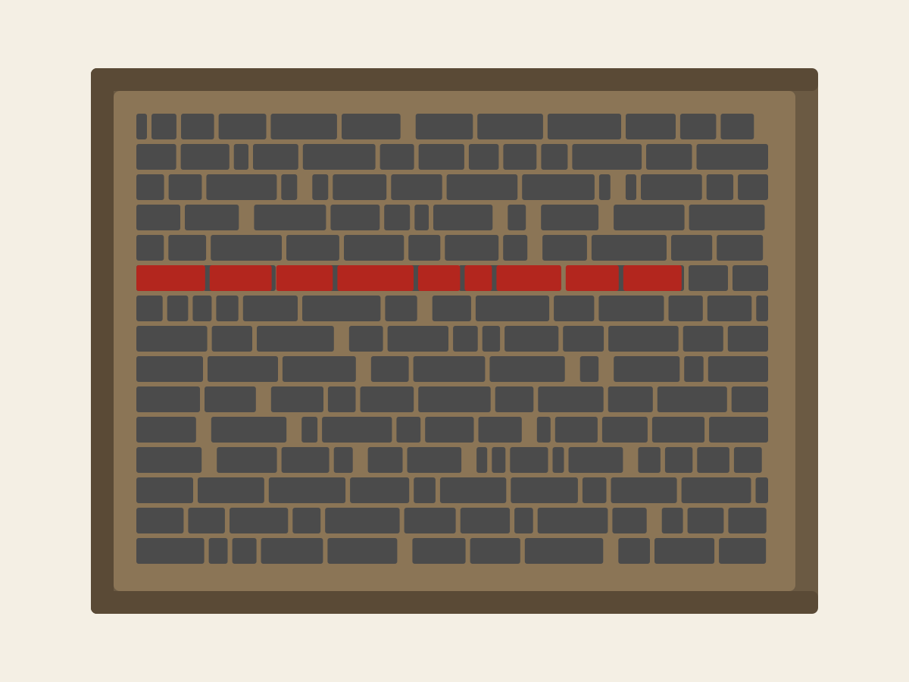
You can drop an image, a video or an embed into the middle of your text, like the galley beside this paragraph. Click it to move it left or right, write its alt text, or take it out again.
A few things that help on a screen:
- Keep paragraphs short: two to four sentences.
- Use subheadings to break up anything longer than a few paragraphs.
- Link to your sources in the sentence that uses them.
Below the quote, a Columns block sets three short texts side by side. On a phone, they stack.
In letterpress printing, a galley was the shallow metal tray where typesetters collected and arranged lines of type before locking them up for the press.
Write. Type your story straight onto the page and see it as readers will. Add blocks with + Add, and move them with Up and Down.
Check. The Checks button asks what an editor would: is that figure sourced? Does that photo have alt text? They're prompts, not marks.
Publish. Export a ZIP for Moodle or a single web page, or save to a folder that stays up to date as you work.
A Divider: a pause between sections
Part two
Pictures and sound
Photos, galleries, video, audio and embeds. Every picture needs alt text, a caption and a credit, and Galley asks for all three.
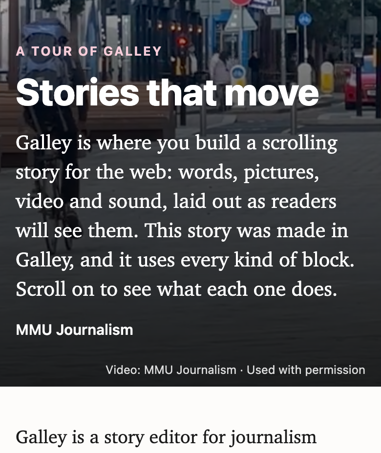
That picture is a Media block. It shows one image, video or sound clip, at the width of the text, a little wider, or the full width of the screen.
A Gallery shows several pictures together, and readers can open any of them full size.
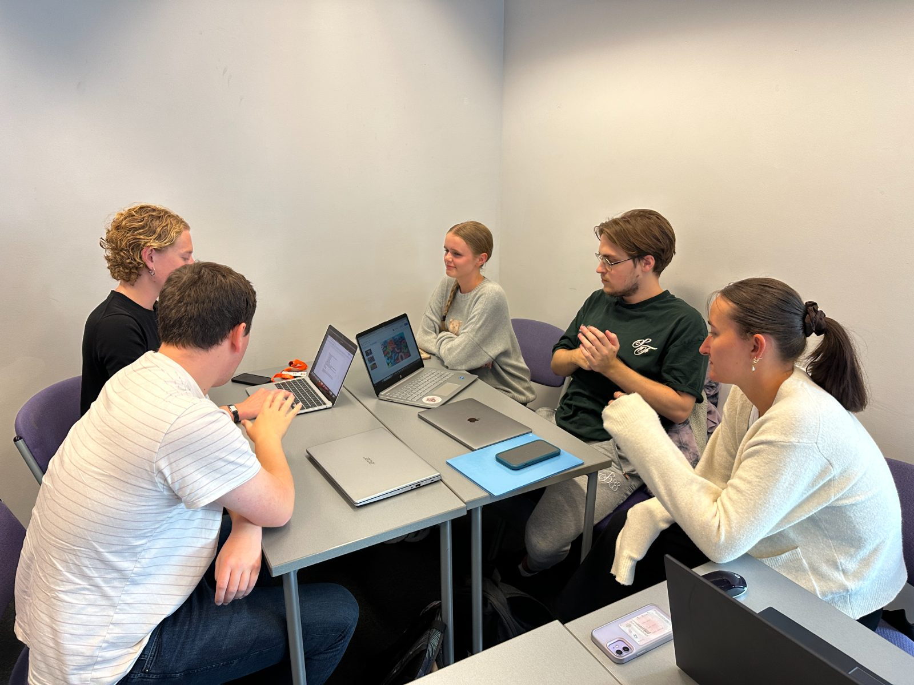
Around the table. Photo: MMU Journalism · Used with permission 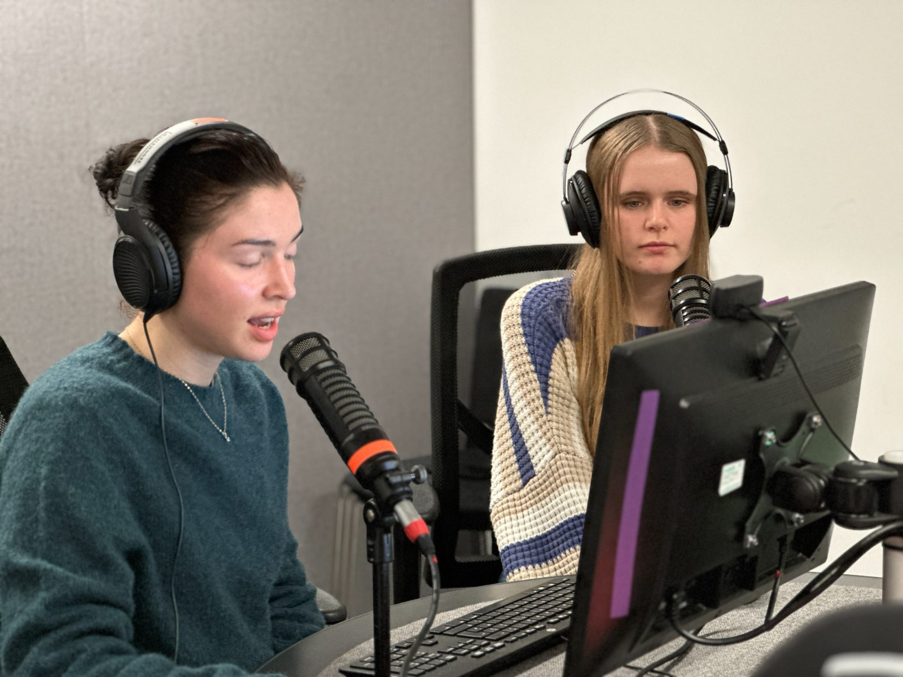
At the microphones. Photo: MMU Journalism · Used with permission 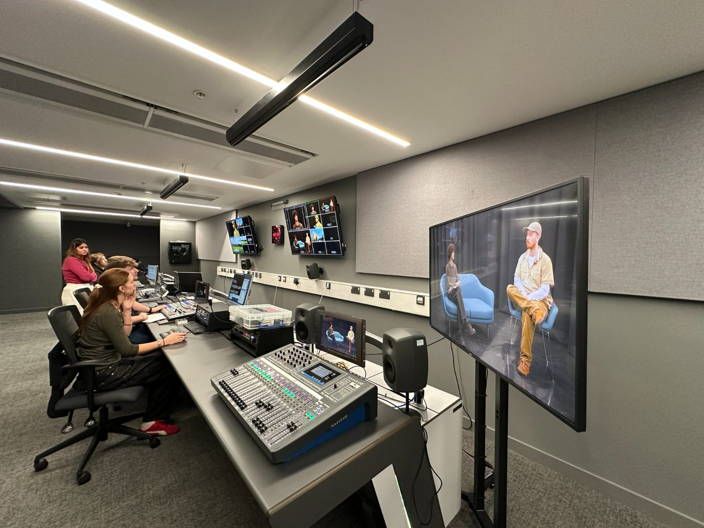
In the TV gallery. Photo: MMU Journalism · Used with permission 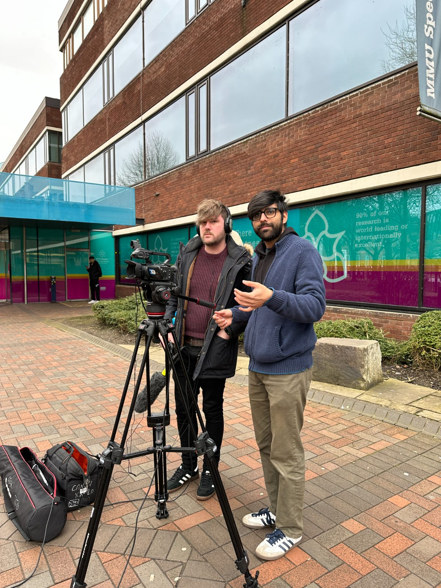
Filming on location. Photo: MMU Journalism · Used with permission


Transcript. "This is a Media block playing a sound clip. In a real story, this is where you might put a short piece of an interview, so readers hear a voice in its own words. Keep clips short, add a caption that says who is speaking, and put the full transcript in the text, so everyone can follow it."
Below is an Embed. Paste a YouTube, Vimeo, Spotify or SoundCloud link and it plays inside your story. Any other web address shows as a card that links to the page, like this one.
Part three
Things that move
The showpiece blocks come alive as the reader scrolls. On the canvas they sit still, so press Play on the block, or Preview, to see them move.
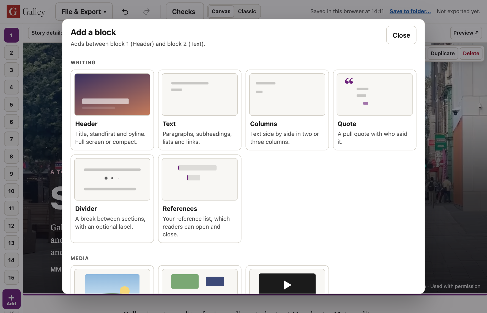
Scroll sequence, side by side. The picture stays put while these steps scroll past. Here's how a story comes together. 1. Add blocks. Press + Add and pick one from the illustrated list.
2. Write on the page. Click any text to type. The bar at the top has bold, italics, links, headings, and a button to add pictures to the text. A step can show a video, like this one.
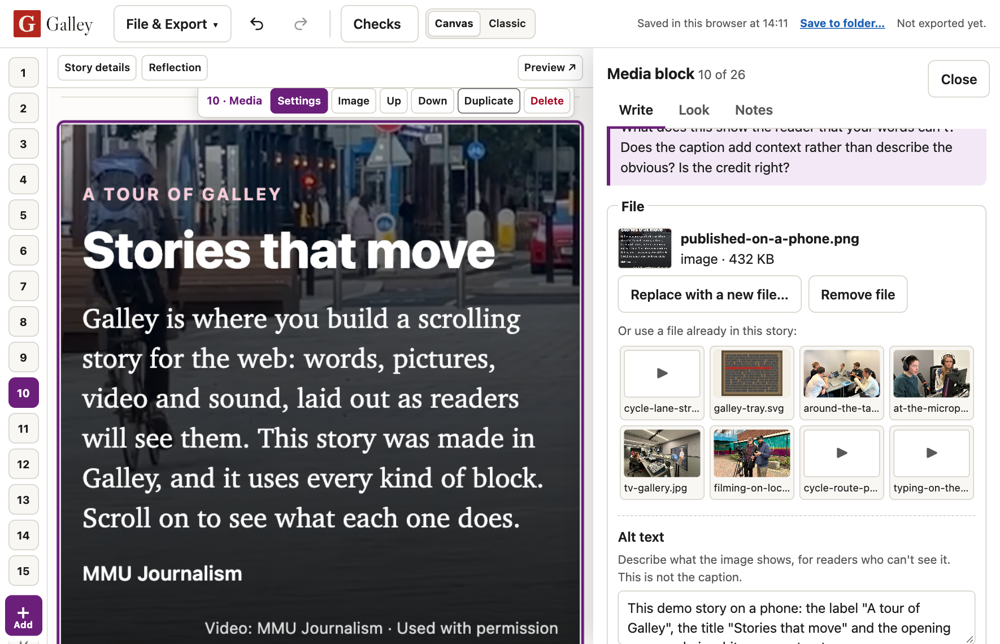
3. Open the settings. Each block's Settings hold what isn't on the page: alt text, credits, layout, effects and notes.
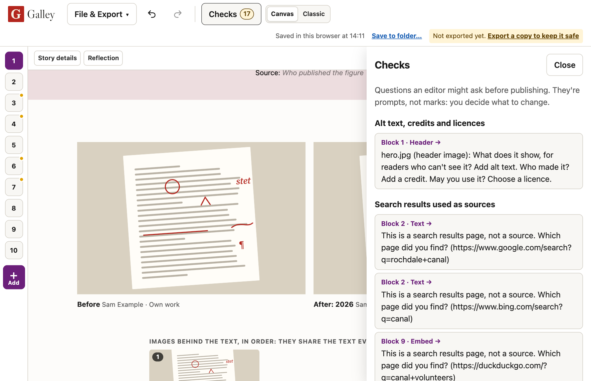
4. Ask the checks. Before you publish, Checks lists the questions an editor might ask. Click one to go straight to its block.
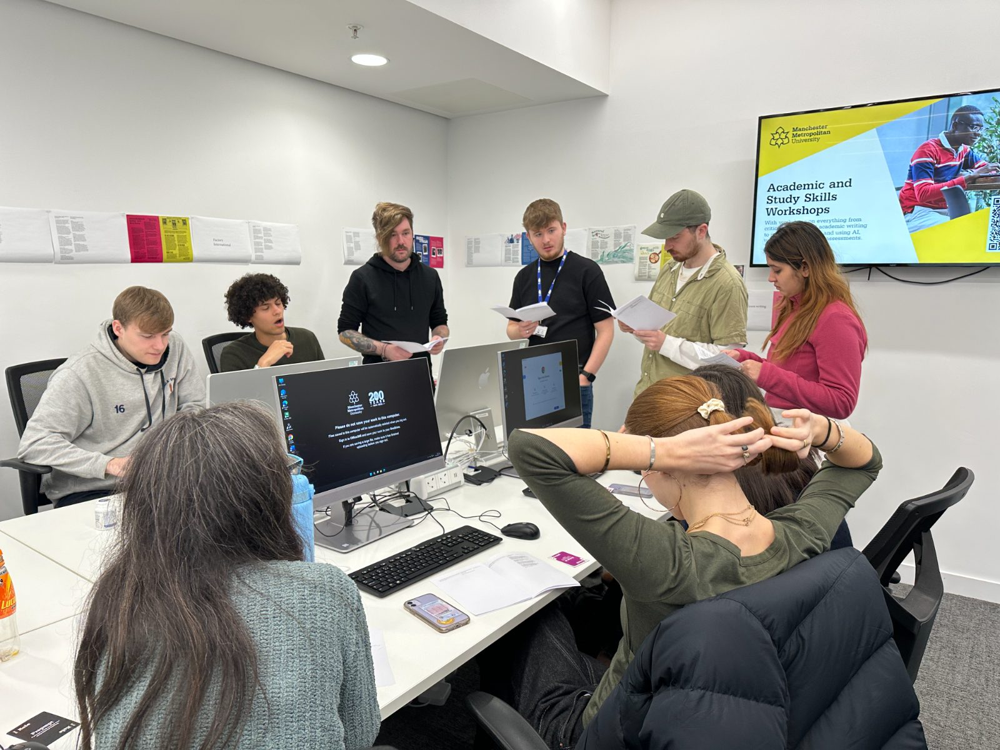
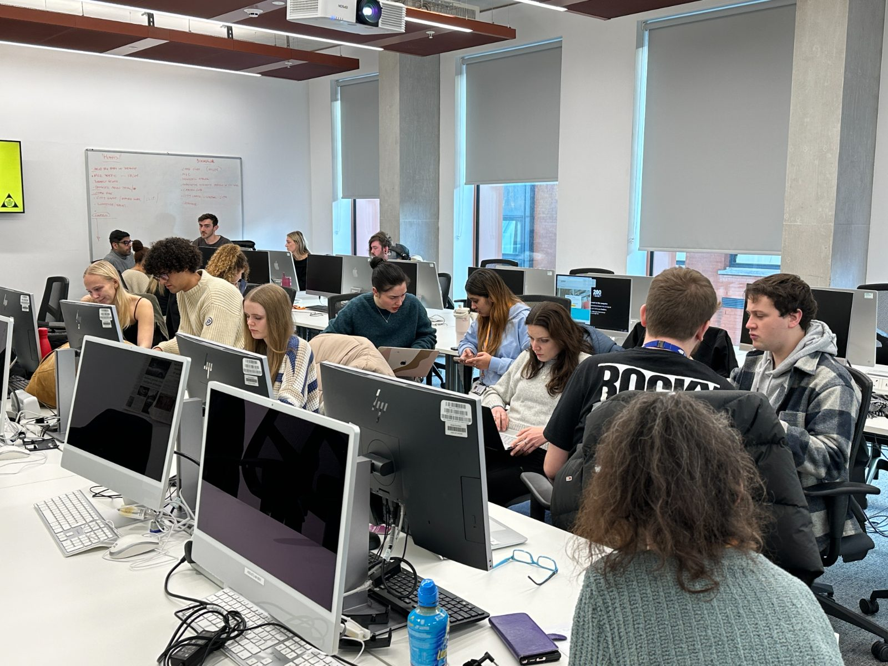
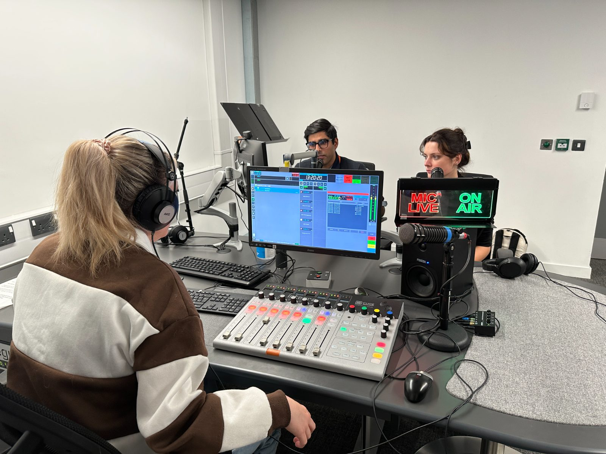
Text column. One long text scrolls over full-screen pictures, and the pictures share the scroll evenly. With three pictures, each one stays for a third of the text.
Use it when the words lead and the pictures set the scene. These three follow a story through the newsroom and onto the air.
It starts with an idea, pitched to an editor, questioned, sharpened and handed to a reporter with a deadline.
Then the story is gathered and shaped: calls made, interviews recorded, the words written, cut and rewritten until every line earns its place.
Finally it goes out, on air, online or in print, checked and ready for an audience.
Galley does the same job for a digital story. You gather your words, pictures and scroll effects in one place, shape them on the page, and lock them into a finished package ready to publish.
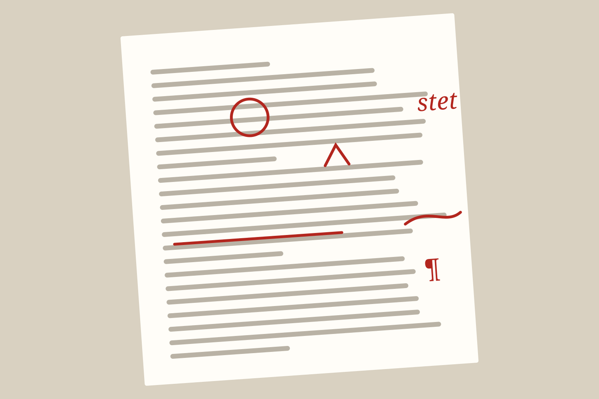
Effects and bands. This paragraph fades in as you reach it, and sits on a coloured band. Both are under Look in a block's settings.
Use them sparingly: a story where everything moves is tiring to read. Readers who turn off movement on their device see everything, just without the motion.
Part four
Your turn
Make this story yours, or start your own.
Change anything
This demo is yours to play with. Click anything, type over it, move blocks around or delete them. Undo puts things back, and File & Export, then Open the demo story brings back a fresh copy whenever you want one.
Start your own
Choose File & Export, then New story. If your module has a course pack, you may start with a ready-made outline and prompts written by your tutor.
Publish
Export a ZIP for Moodle, or a single web page to share. Galley saves your work in your browser as you go. To keep a copy somewhere safer, use Save to folder and choose a folder in OneDrive.
Scrolling stories like this one have been around since the New York Times published Snow Fall (Branch, 2012). The list below is a References block, and Checks makes sure every citation in your text has a reference to match.
References
- Branch, J. (2012) 'Snow Fall: the avalanche at Tunnel Creek', The New York Times, 20 December. Available at: https://www.nytimes.com/projects/2012/snow-fall/ (Accessed: 10 November 2026).